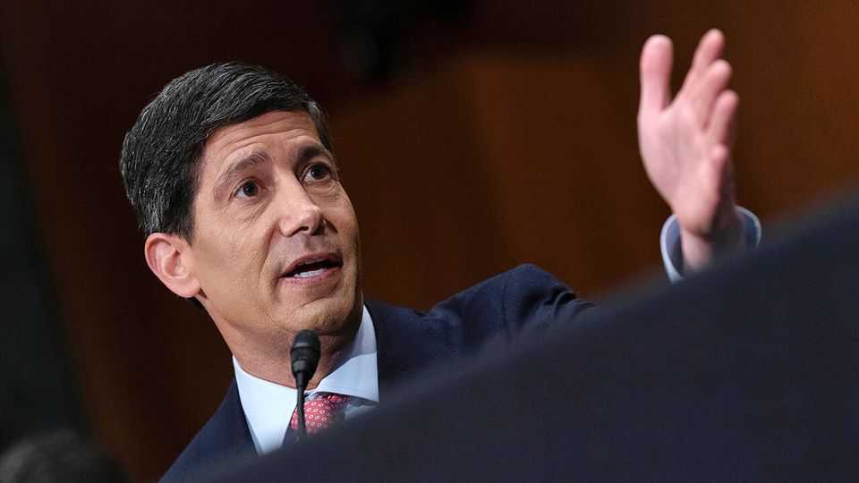
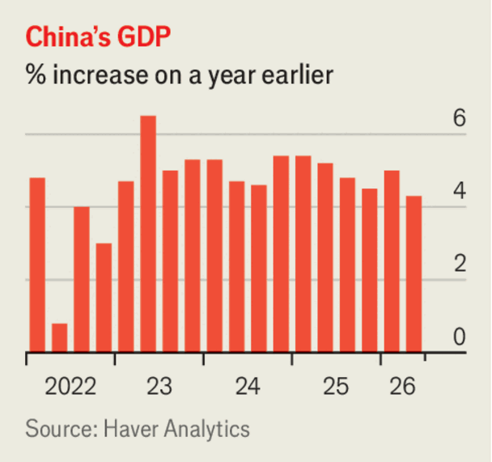

Business
July 16th 2026

Kevin Warsh gave his first report to Congress as chairman of the Federal Reserve. Mr Warsh said the Fed was committed to “restoring price stability”, which would entail a “regime change in policy” to make the inflation surge of the previous five years “a thing of the past”. Mr Warsh has appointed task forces to assess each of the five areas that are central to the Fed’s policy. The task forces’ members include Lord Mervyn King, a former governor of the Bank of England, and Greg Mankiw, who led George W. Bush’s Council of Economic Advisers.
Mr Warsh gave his testimony as the latest figures on American consumer-price inflation showed the annual rate falling in June to 3.5%, from 4.2% in May. Core inflation, which excludes volatile food and energy prices, also fell, to 2.6%. Energy prices declined by 5.7%, month on month, after rising for three months.
Brisk activity in equities trading during the second quarter led to huge profits at America’s big banks. Net income at JPMorgan Chase was up by 41%, year on year, to $21.2bn. Profits surged by 80% at Goldman Sachs, by 45% at Citigroup and by 27% at Bank of America.
South Korea’s central bank raised interest rates for the first time in three years, lifting its base rate to 2.75%. The boom in exports from the country’s mighty chipmakers is expected to “spill over into domestic demand”, said the bank. Higher oil prices, coupled with a weaker won to pay for energy imports, are also adding to inflationary pressures.
SK Hynix’s debut on the Nasdaq exchange was a success. The South Korean chipmaker raised $26.5bn through a sale of stock in American depositary receipts (allowing American investors to buy its shares). In the days following the flotation the share price fell as investors banked profits from the sale, but it then surged again in another rollercoaster week for the KOSPI, South Korea’s main stock-market index.
EasyJet changed its mind about a proposal to be taken private by Castlelake, an American investment firm, and instead accepted an offer from Apollo, a private-equity firm, that values the European airline at £5.7bn ($7.6bn). Castlelake had not finalised its proposal.
Uber agreed to buy Delivery Hero, a German online food-ordering company that operates in 65 countries. The acquisition values Delivery Hero, which will sell its Turkish business and make other divestments, at €13bn ($14.8bn).

China’s economy grew by 4.3% in the second quarter, year on year. Apart from the pandemic era it was the country’s slowest growth rate since the early 1990s, when its GDP statistics were standardised. The domestic economy has remained subdued during a long slowdown in the property market. Exports are booming, however. Separate figures showed the value of goods sent abroad rising by 27% in June. Shipments of cars were up by 71% to more than 1m for the first time.
Apple lodged a lawsuit against OpenAI, accusing it and two former employees of stealing trade secrets. The complaint relates to OpenAI’s expansion into consumer devices, the development of which is now “rotten to the core”, according to Apple. OpenAI denies the claims. OpenAI’s first device will be a portable speaker.
The AI boom powered ASML to another bumper quarter. The Dutch maker of lithography machines used to produce high-end chips recorded a 21% jump in sales, year on year, to €9.3bn ($10.7bn) and raised its annual outlook. TSMC, the world’s biggest contract-manufacturer of chips, reported a 77% rise in net profit and also lifted its revenue projections.
New York imposed a one-year moratorium on building large AI data centres, the first American state to do so. Residents are objecting to the facilities, claiming, often on dubious evidence, that they use too much water and raise electricity prices.
SpaceX’s stock slipped below the $135 it was listed at in its initial public offering on June 12th. More than $1trn has been wiped off the company’s market value since the share price hit a peak in mid-June.
Speculation that artificial intelligence is causing a market bubble was dismissed as “absurd” by Masayoshi Son, the boss of SoftBank. Mr Son was an early backer of the technology. He indulged in some speculation of his own. By 2040 humans will no longer be the “highest life form”, predicted Mr Son, $5trn a year will be spent on AI, and data centres will be powered by nuclear fusion. In June Mr Son compared worries about an AI bubble to “blasphemy”.
Sir Demis Hassabis, the co-founder of Google DeepMind, called for the establishment of a regulatory body to oversee potential threats from the most-advanced AI models to national security. The organisation should be led by America, said Sir Demis, and modelled on the Financial Industry Regulatory Authority, an American non-governmental body that protects investors.